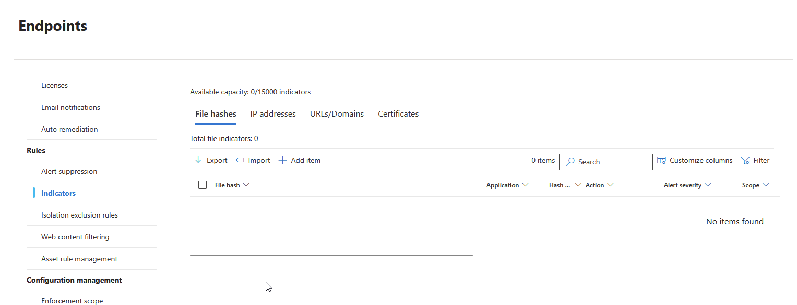
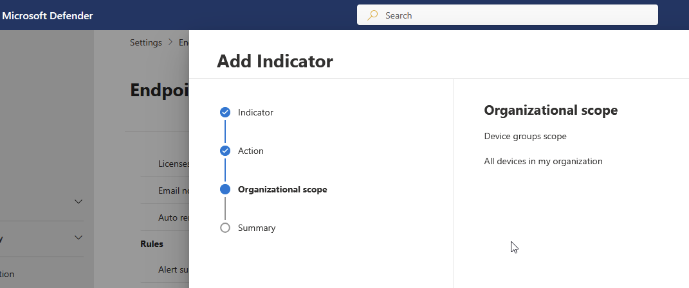
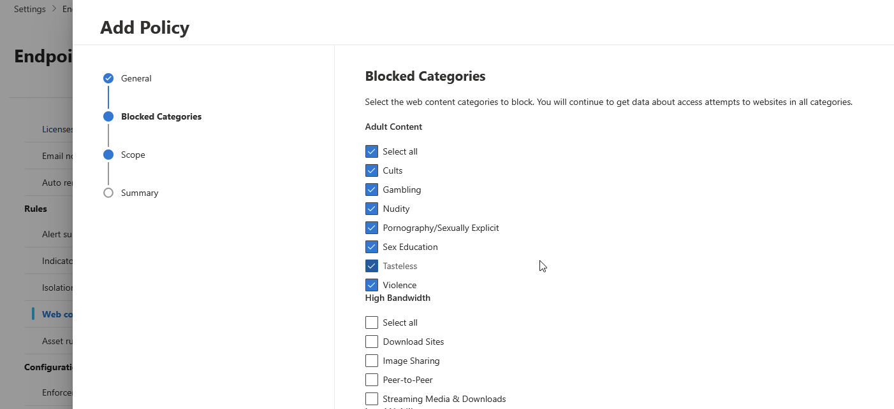
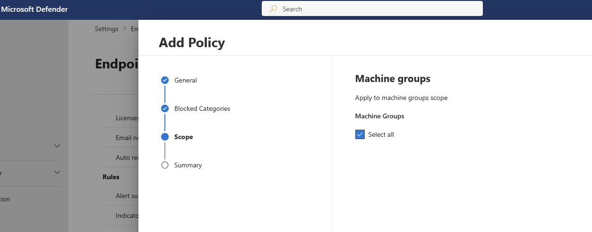
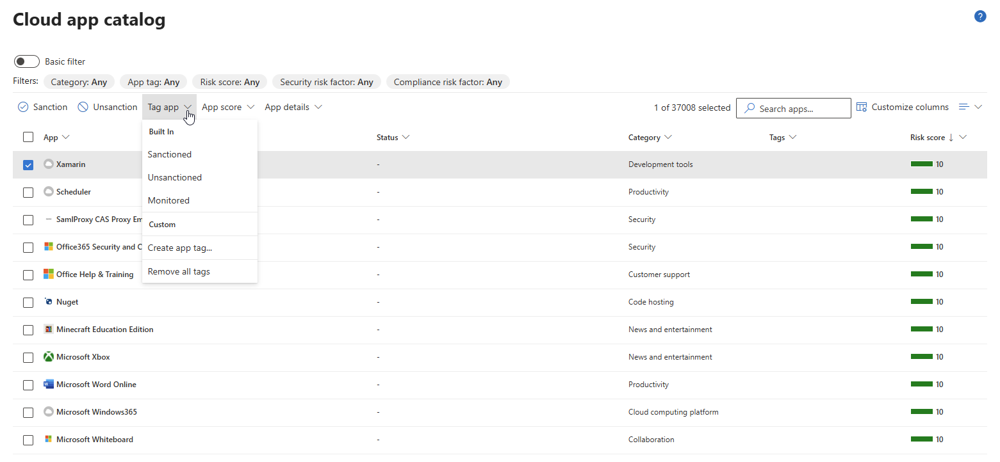
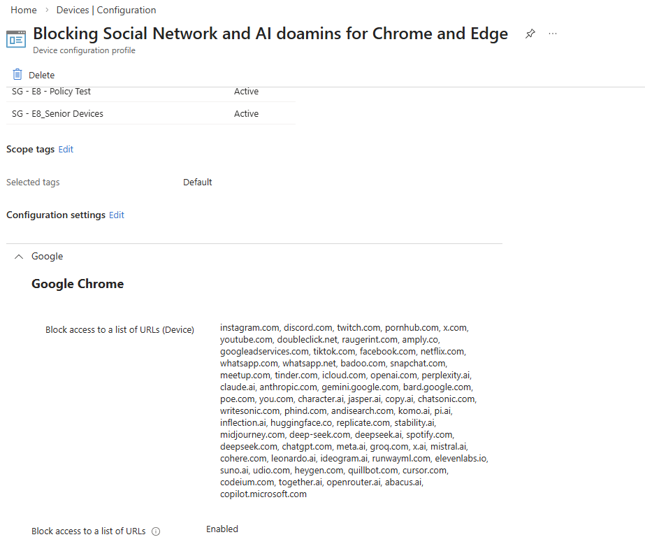

Blocking Specific URLs in MS365
This is my summary experience for blocking specific URLs in MS365.
The first thing you need to decide is the most suitable method for your environment. There are two main approaches:
- Device-based
- User-based
Device-based
Using Microsoft Defender for Endpoint (MDE)
With the followings, you can block or allow any onboarded devices from accessing
applications, URLs, domains, or IP addresses.
indicators, or
Cloud app catalog
You may need the appropriate license to apply policies to specific devices.
Without it, policies may apply to all devices only.
Indicator


Web Content Filtering


Cloud Apps

Using Microsoft Intune
With the Devices --> Configuration --> Policies, you can block users from accessing specific URLs in Chrome and Edge.
User-based
(Add your content here)